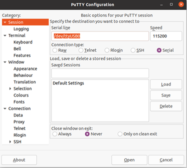
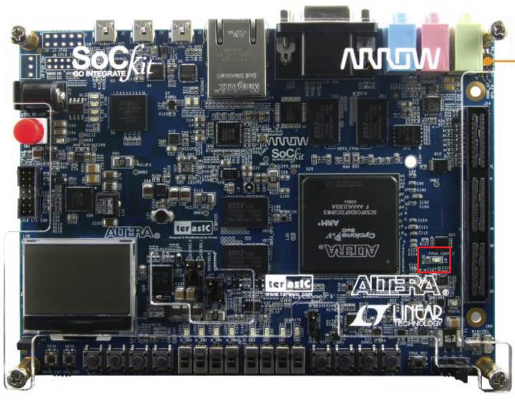

編寫 C Code 在 Linux 上跑
|
$cd ~/Projects/cv_example.sdmmc/ $sudo chmod +x -p c_code $cd c_code/ $vim generate_hps_qsys_header.sh |
新手注意事項: ! 做到最後一步代表你已打開generate_hps_qsys_header.sh要進行編輯了. ! 用 vim 打開 generate_hps_qsys_header.sh |
|
#!/bin/sh CMD="sopc-create-header-files \ "~/Projects/cv_example.sdmmc/arrow_sockit_ghrd/sockit_ghrd.sopcinfo"
\ --single hps_0.h \ --module hps_0 \ " echo ${CMD} ${CMD} |
新手注意事項: ! 請確定 sockit_ghrd.sopcinfo 的路徑是否正確 ! 按一下 i 就可以 past 你要的內容囉. ! 貼上之後, 按 esc, 然後再按 :wq 就好. |
|
$~/intelFPGA/20.1/embedded/embedded_command_shell.sh $cd ~/Project/cv_example.sdmmc/c_code/led $export
PATH=~/intelFPGA/21.1/quartus/sopc_builder/bin:$PATH $./generate_hps_qsys_header.sh |
新手注意事項: |
|
$vim build_script.sh |
新手注意事項: ! 用 vim 打開 build_script.sh |
|
#!/bin/sh CMD="arm-none-linux-gnueabihf-gcc \ -g \ -O0 \ -Werror \ -Wall \ -Dsoc_cv_av \ -I${SOCEDS_DEST_ROOT}/ip/altera/hps/altera_hps/hwlib/include \ -I${SOCEDS_DEST_ROOT}/ip/altera/hps/altera_hps/hwlib/include/soc_cv_av
\ -o led_blink \ main.c \ " echo ${CMD} ${CMD} |
新手注意事項: ! 請確定 gcc 跟下面的是否一樣 ! 按一下 i 就可以 past 你要的內容囉. 貼上之後, 按 esc, 然後再按 :wq 就好. ! -I$路徑 \ 代表你要增加多少的 Library 進去, 如果你有自己的 Lib 也可以再多加幾行. 因為你的 code 可能會參考到自己以前寫的或別人的 code. |
|
$cd ~/toolchain $export
PATH=`pwd`/gcc-arm-11.2-2022.02-x86_64-arm-none-linux-gnueabihf/bin:$PATH $export ARCH=arm $export CROSS_COMPILE=arm-none-linux-gnueabihf-gcc $~/intelFPGA/22.1std/embedded/embedded_command_shell.sh $cd ~/Projects/c_code/ $./build_script.sh |
新手注意事項: ! 設定 Toolchain 路徑 ! 設定 cross compile 的目標為 ARM ! 設定 cross compile 的 gcc, 請確定 gcc 跟上面的是否一樣 ! Build_script.sh 就是對 C code compile 了. ! Compile 完就會出現一個檔案 led_blink |
|
$cd /media/host_name/xxxxxx/ (xxxxxx 代表你的 SD
card 的名稱) $cd home $sudo mkdir app $cd app $sudp cp
~/Projects/cv_example.sdmmc/c_code/led_blink . |
新手注意事項: ! 用文件夾管理員去看哪一個 SD card 的 partition 有 home 這一個資料夾. |
|
$sudo
adduser username dialout $sudo
dmesg | grep tty $lsusb $sudo
apt install putty |
新手注意事項: ! Username 就是你 Ubuntu 的帳號 ! 把 EVB 的 USB-UART 插入電腦並執行, 看哪一個 device. 應該是 ttyUSB0 ! 可以看到 chip vender ! 安裝 Putty |


|
$cd /home/app $./led_blink |
新手注意事項: ! 如果 LED 有閃, 你就成功了. |
這一個分頁, 是教你怎要用最便宜的方法設計一個可以在 ARM 的 Linux 上跑的 App. 因為沒有用到 SDK.
但, 當你的 code 越來越肥, 你要 Debug 怎辦? 所以你就要去買 ARM Development
Suite 這 SDK 就有 Debug 的功能.
之後會在弄一頁, 來談談 ARM DS 怎麼使用.